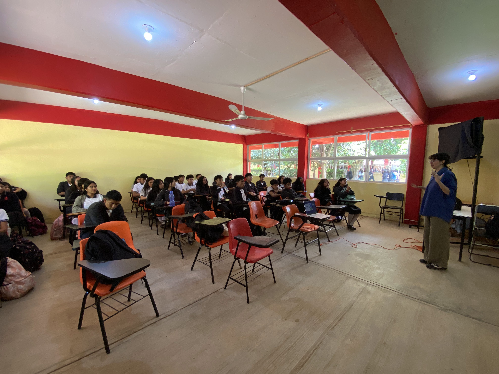
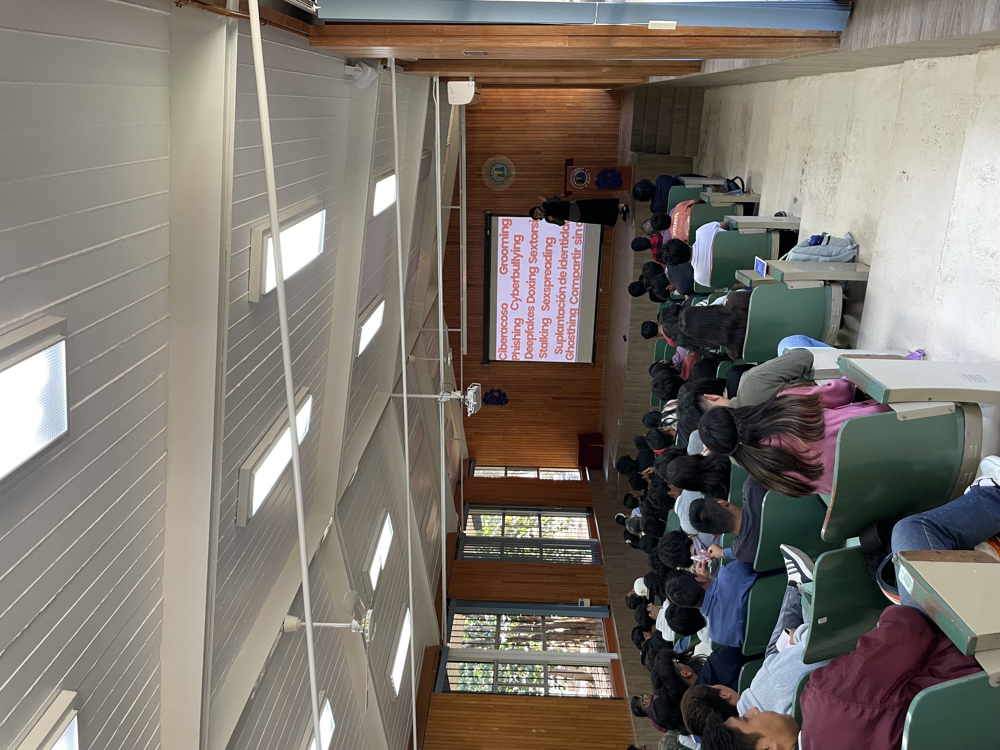
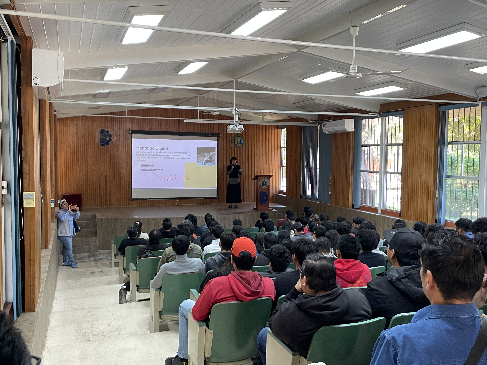

Pláticas
Una exploración de las pláticas que he dado sobre el otro mundo que habitamos, el internet.
Esta plática tiene como título "Kit de cuidados digitales con perspectiva de género",donde hablamos sobre 3 ejes importantes: Identidad digital, El lado oscuro de la IA y Violencia digital, este conjunto de información busca que los jóvenes y personas de todas las edades entiendas los peligros, logren identificar situaciones vulnerables y se informen.
Muchas veces creemos que lo que pasa en el internet no es realidad porque no lo vemos, pero si importa. La violencia digital es real A través de estas pláticas se busca concientizar, informar y cuidar la realidad que es nuestra vida, que vivimos en dos mundos y que más del 80% de la población en el mundo tiene acceso a internet. Pláticas para todo público. Duración 1 hora.


